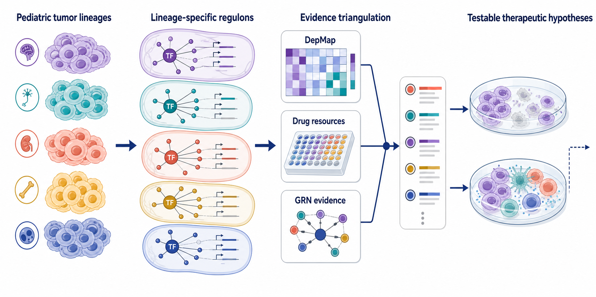

From tumor identity to a testable dependency
Pediatric tumors can share expression patterns while relying on different regulatory programs. I ask which transcription factors and their target-gene sets are associated with a tumor lineage, and whether independent functional and pharmacologic evidence makes those regulators worth testing. The aim is to move from a list of expressed genes to a focused, evidence-ranked therapeutic hypothesis.
This complements my RMS cell-state work: one project resolves heterogeneous cellular programs, while this project evaluates the regulatory dependencies that may sustain a tumor identity.
What I built and contributed
As computational lead contributor, I built consensus gene-regulatory networks using ARACNe-AP and GENIE3, integrated transcription-factor/regulon evidence with tumor-specific expression, and combined those results with DepMap dependencies and pharmacologic resources. I organized the resulting evidence into candidate-regulator priorities and model comparisons for an ongoing pan-pediatric manuscript.
My work spans analytical design, implementation, interpretation, and research communication. The central deliverable is a traceable account of why a regulator is a plausible candidate, what evidence conflicts with that conclusion, and which follow-up comparison could resolve the uncertainty.
Reading Figure 2: four stages of target discovery
Tumor lineages. Expression context defines the biological comparison. A candidate is interpreted relative to lineage, proliferation, and cellular composition rather than ranked by expression alone.
Lineage-associated regulons. Complementary network-inference methods organize candidate transcription factors and their predicted targets. Agreement supports prioritization; inferred connections remain hypotheses.
Evidence integration. DepMap tests a different question from expression: whether a gene is required in a relevant model. PRISM, ChEMBL, DrugBank, DrugCentral, and MIPE add pharmacologic information. These sources are not interchangeable, so supporting and contradictory evidence stay visible.
Testable therapeutic hypotheses. Ranked candidates and model comparisons focus the next experiment. The culture and perturbation imagery depicts this follow-up stage, not completed validation.
Concrete research outputs
The analysis produces consensus regulatory networks, lineage-associated regulator priorities, integrated dependency and pharmacology evidence, and interpretable figures for manuscript development. These outputs let collaborators interrogate the rationale behind a candidate rather than accept a single opaque score.
I evaluate model relevance, generic essentiality, proliferation, tissue composition, and conflicting evidence. A strong generic dependency is not automatically a selective tumor vulnerability, and a drug annotation does not establish that an effective or selective treatment is available.
Value for therapeutic research teams
For a company or research institute, this is a practical analytical capability: combine heterogeneous evidence, reduce a broad target space to inspectable hypotheses, and define the next validation question. My contribution is hands-on computational leadership and a research output that experimental teams can build on.
Explore deliverables for industry and translational partners or the independent research program that extends this direction.